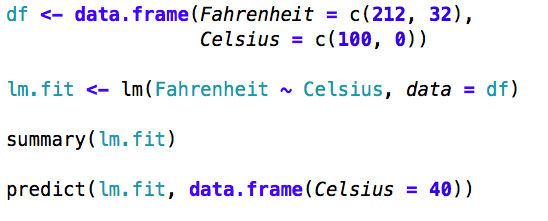
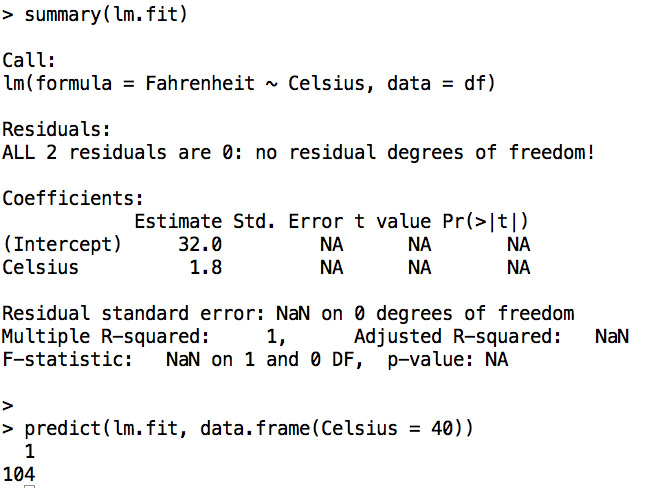
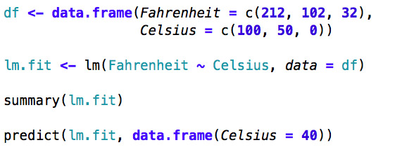
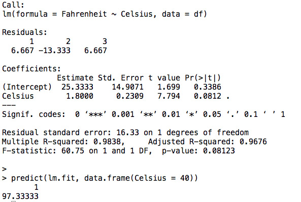
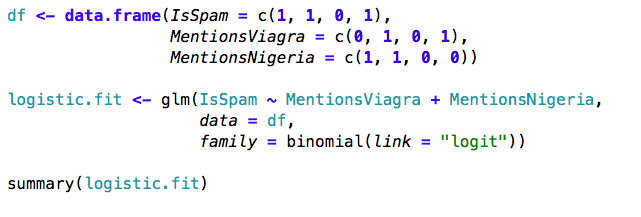
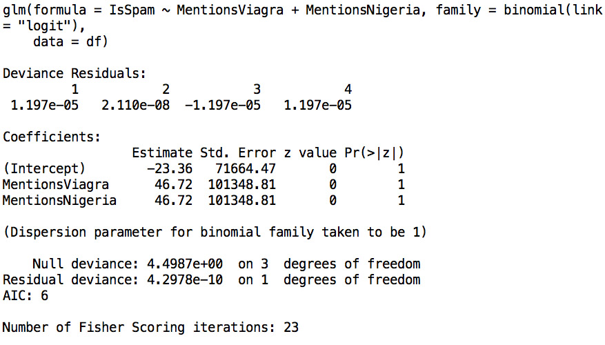
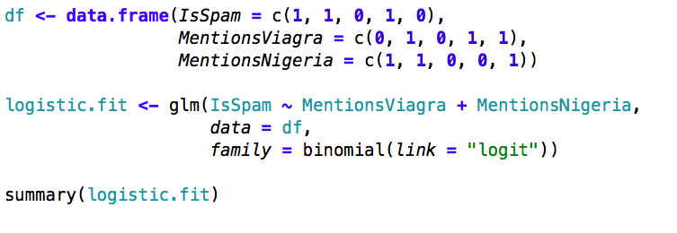
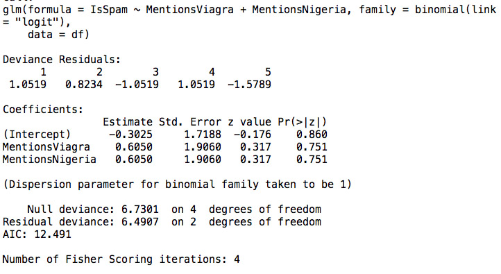

Machine Learning for Hackers
- John Myles White, Department of Psychology, Princeton University
- Drew Conway, Department of Politics, New York University
Many tricks for turning categorical data into numbers:








top.1000.sites <- read.csv(file.path('data', 'top_1000_sites.tsv'),
sep = '\t',
stringsAsFactors = FALSE)
head(top.1000.sites, n = 4)
ggplot(top.1000.sites, aes(x = PageViews, y = UniqueVisitors)) +
geom_point()
ggsave(file.path("images", "page_views_vs_visitors.pdf"))
ggplot(top.1000.sites, aes(x = log(PageViews),
y = log(UniqueVisitors))) +
geom_point()
ggsave(file.path("images", "log_page_views_vs_log_visitors.pdf"))
ggplot(top.1000.sites, aes(x = log(PageViews),
y = log(UniqueVisitors))) +
geom_point() +
geom_smooth(method = 'lm', se = FALSE)
ggsave(file.path("images",
"log_page_views_vs_log_visitors_with_lm.pdf"))
lm.fit <- lm(log(PageViews) ~ log(UniqueVisitors),
data = top.1000.sites)
summary(lm.fit)
Call:
lm(formula = log(PageViews) ~ log(UniqueVisitors), data = top.1000.sites)
Residuals:
Min 1Q Median 3Q Max
-2.1825 -0.7986 -0.0741 0.6467 5.1549
Coefficients:
Estimate Std. Error t value Pr(>|t|)
(Intercept) -2.83441 0.75201 -3.769 0.000173 ***
log(UniqueVisitors) 1.33628 0.04568 29.251 < 2e-16 ***
---
Signif. codes: 0 ‘***’ 0.001 ‘**’ 0.01 ‘*’ 0.05 ‘.’ 0.1 ‘ ’ 1
Residual standard error: 1.084 on 998 degrees of freedom
Multiple R-squared: 0.4616, Adjusted R-squared: 0.4611
F-statistic: 855.6 on 1 and 998 DF, p-value: < 2.2e-16
lm.fit <- lm(log(PageViews) ~ HasAdvertising +
log(UniqueVisitors) +
InEnglish,
data = top.1000.sites)
summary(lm.fit)
Call:
lm(formula = log(PageViews) ~ HasAdvertising + log(UniqueVisitors) +
InEnglish, data = top.1000.sites)
Residuals:
Min 1Q Median 3Q Max
-2.4283 -0.7685 -0.0632 0.6298 5.4133
Coefficients:
Estimate Std. Error t value Pr(>|t|)
(Intercept) -1.94502 1.14777 -1.695 0.09046 .
HasAdvertisingYes 0.30595 0.09170 3.336 0.00088 ***
log(UniqueVisitors) 1.26507 0.07053 17.936 < 2e-16 ***
InEnglishNo 0.83468 0.20860 4.001 6.77e-05 ***
InEnglishYes -0.16913 0.20424 -0.828 0.40780
---
Signif. codes: 0 ‘***’ 0.001 ‘**’ 0.01 ‘*’ 0.05 ‘.’ 0.1 ‘ ’ 1
Residual standard error: 1.067 on 995 degrees of freedom
Multiple R-squared: 0.4798, Adjusted R-squared: 0.4777
F-statistic: 229.4 on 4 and 995 DF, p-value: < 2.2e-16
lm.fit <- lm(log(PageViews) ~ HasAdvertising,
data = top.1000.sites)
summary(lm.fit)$r.squared
[1] 0.01073766
lm.fit <- lm(log(PageViews) ~ log(UniqueVisitors),
data = top.1000.sites)
summary(lm.fit)$r.squared
[1] 0.4615985
lm.fit <- lm(log(PageViews) ~ InEnglish,
data = top.1000.sites)
summary(lm.fit)$r.squared
[1] 0.03122206
x <- 1:10
y <- x^2
cor(x, y)
[1] 0.9745586
coef(lm(scale(y) ~ scale(x)))[2]
[1] 9.745586e-01